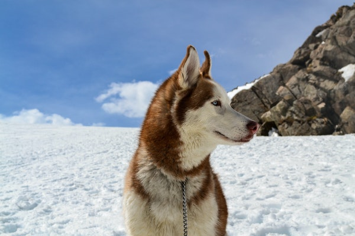

Look after wild animals and nurse them back to health: in WildLife - America you can care for animals from the North American wilderness, cure their illnesses and tend their injuries so that they can move to new homes with new owners or be released back into the wild! • The exciting sequel to PetWorld with lots of new animals including squirrels, raccoons, skunks, wolves and bears. • Brand new: take care of sweet otters and mustang horses that need your help! • Identify what your patients need and nurse them back to health. • The more experience you gather, the better the objects you can unlock and use to fit out your enclosures. • Realistic graphics and cute animations make WildLife - America an unforgettable gaming experience. The wild animals are on the loose! In WildLife - America you can now look after the many endangered species from the forests in the tundra of Canada and Alaska. Like in PetWorld , you will experience the excitement of the daily life of an animal keeper – this time at a wildlife rescue center. The rangers desperately need some skilled helpers for their team as more and more animals arrive at the reserve needing your help! Treat injured wolves, diagnose the bears' illnesses and find new homes for your charges with trustworthy, caring new owners – it's all up to you! But before you can pass the animals into experienced hands, you'll need to nurse them back to health. With WildLife - America you can now also customize the enclosures of your animals! Whether it's a pen for the raccoons or trees for the exuberant squirrels to frolic around in – let your imagination run wild! To make sure your animals feel at home during their stay and have an appropriate habitat, you can set up their enclosures to be as close to nature as possible.
